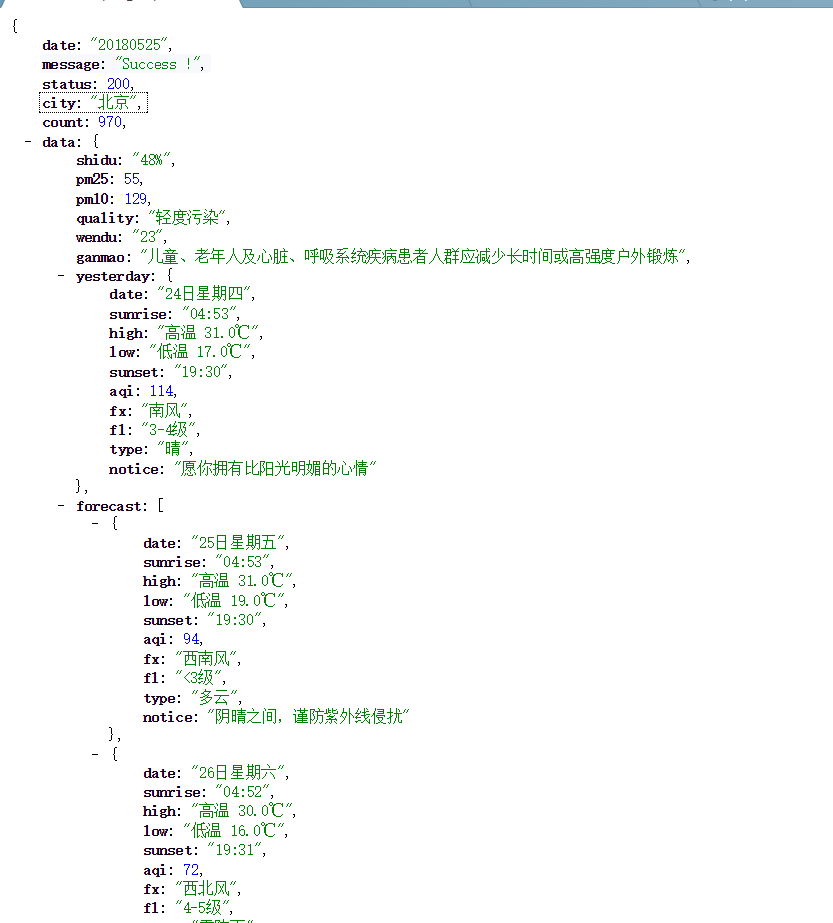

<?php
/**
* 模拟post进行url请求
* @param string $url
* @param array $postData
*/
function request_post($url = '', $postData = []) {
if (empty($url)) {
return false;
}
if ($postData != []) {
$vars = http_build_query($postData, '', '&');
curl_setopt($ch, CURLOPT_POSTFIELDS, $vars);
}
$postUrl = $url;
//初始化curl //转义
$ch = curl_init();
//抓取指定网页
curl_setopt($ch, CURLOPT_URL,$postUrl);
//设置header
curl_setopt($ch, CURLOPT_HEADER, 0);
//要求结果为字符串且输出到屏幕上
curl_setopt($ch, CURLOPT_RETURNTRANSFER, 1);
//规避SSL验证
curl_setopt($ch, CURLOPT_SSL_VERIFYPEER, false);
//跳过HOST验证
curl_setopt($ch, CURLOPT_SSL_VERIFYHOST, false);
//运行curl
$data = curl_exec($ch);
curl_close($ch);
return $data;
}
/**
* 测试
* @param string $url
*/
function testAction() {
$url = 'https://www.sojson.com/open/api/weather/json.shtml?city=北京';
$res = request_post($url);
print_r($res);
}
testAction();
结果:
